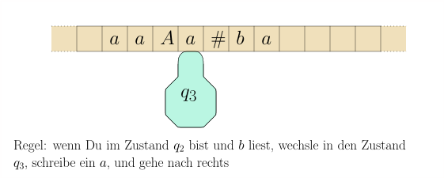
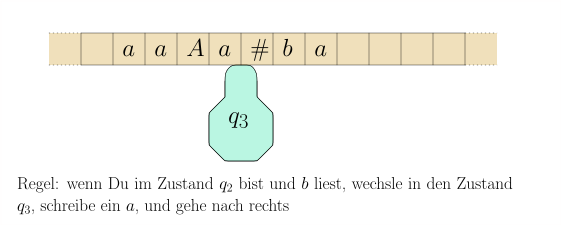
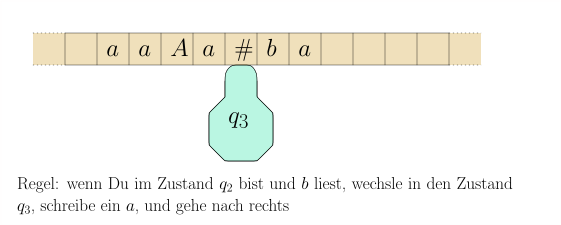

8.1 Turingmaschinen: Formale Definition und Beispiele./wly/08/01-Turing-machines-definition.wly:2:11
Eine Turingmaschine besteht aus einem ./wly/08/01-Turing-machines-definition.wly:4:5Band./wly/08/01-Turing-machines-definition.wly:4:44,./wly/08/01-Turing-machines-definition.wly:4:49 das in./wly/08/01-Turing-machines-definition.wly:4:49 Zellen unterteilt ist und in beide Richtungen./wly/08/01-Turing-machines-definition.wly:5:5 unbegrenzt ist, und einem ./wly/08/01-Turing-machines-definition.wly:6:5Schreib-Lese-Kopf./wly/08/01-Turing-machines-definition.wly:6:32../wly/08/01-Turing-machines-definition.wly:6:50 Dieser./wly/08/01-Turing-machines-definition.wly:6:50 befindet sich in jedem Schritt auf einer Zelle. Wie./wly/08/01-Turing-machines-definition.wly:7:5 auch der endliche Automat oder der Kellerautomat hat./wly/08/01-Turing-machines-definition.wly:8:5 die Turingmaschine einen internen ./wly/08/01-Turing-machines-definition.wly:9:5Zustand./wly/08/01-Turing-machines-definition.wly:9:40../wly/08/01-Turing-machines-definition.wly:9:48 In jedem./wly/08/01-Turing-machines-definition.wly:9:48 Schritt liest die Maschine das Zeichen, das sich in./wly/08/01-Turing-machines-definition.wly:10:5 der aktuellen Zelle des Bandes befindet (dort, wo der./wly/08/01-Turing-machines-definition.wly:11:5 Kopf steht). Abhängig vom gelesenen Zeichen ./wly/08/01-Turing-machines-definition.wly:12:5$s$./wly/08/01-Turing-machines-definition.wly:12:49 und./wly/08/01-Turing-machines-definition.wly:12:52 dem internen Zustand ./wly/08/01-Turing-machines-definition.wly:13:5$q$./wly/08/01-Turing-machines-definition.wly:13:26 schreibt die Turingmaschine./wly/08/01-Turing-machines-definition.wly:13:29 ein neues Symbol ./wly/08/01-Turing-machines-definition.wly:14:5$s'$./wly/08/01-Turing-machines-definition.wly:14:22 in die Zelle, wechselt in einen./wly/08/01-Turing-machines-definition.wly:14:26 neuen Zustand ./wly/08/01-Turing-machines-definition.wly:15:5$q'$./wly/08/01-Turing-machines-definition.wly:15:19 und bewegt den Kopf um maximal./wly/08/01-Turing-machines-definition.wly:15:23 eine Zelle, also nach link, rechts, oder gar nicht../wly/08/01-Turing-machines-definition.wly:16:5
public/img/turing-machines/exampe-1/01.svg
public/img/turing-machines/exampe-1/02.svg
public/img/turing-machines/exampe-1/03.svg
public/img/turing-machines/exampe-1/04.svg
 public/img/turing-machines/exampe-1/05.svg
public/img/turing-machines/exampe-1/05.svg
public/img/turing-machines/exampe-1/06.svg
public/img/turing-machines/exampe-1/07.svg
 public/img/turing-machines/exampe-1/08.svg
public/img/turing-machines/exampe-1/08.svg
Sie können sich das Band auch als Magnetband./wly/08/01-Turing-machines-definition.wly:29:5 vorstellen, das nach vorn oder nach hinten gespult./wly/08/01-Turing-machines-definition.wly:30:5 wird, anstatt dass der Kopf sich bewegt. Am Anfang./wly/08/01-Turing-machines-definition.wly:31:5 steht auf dem Band das ./wly/08/01-Turing-machines-definition.wly:32:5Eingabewort./wly/08/01-Turing-machines-definition.wly:32:29 und der Kopf auf./wly/08/01-Turing-machines-definition.wly:32:41 dem ersten Symbol dieses Wortes. Die Turingmaschine./wly/08/01-Turing-machines-definition.wly:33:5 wendet nun ihre Regeln an, bis Sie einen ./wly/08/01-Turing-machines-definition.wly:34:5Endzustand./wly/08/01-Turing-machines-definition.wly:34:47 ./wly/08/01-Turing-machines-definition.wly:34:58 erreicht. Bei ./wly/08/01-Turing-machines-definition.wly:35:5Entscheidungsproblemen./wly/08/01-Turing-machines-definition.wly:35:20,./wly/08/01-Turing-machines-definition.wly:35:43 wo uns nur./wly/08/01-Turing-machines-definition.wly:35:43 eine Ja/Nein-Antwort interessiert, wird die Antwort./wly/08/01-Turing-machines-definition.wly:36:5 durch den Entzustand angegeben: der Zustand ./wly/08/01-Turing-machines-definition.wly:37:5$\qaccept$./wly/08/01-Turing-machines-definition.wly:37:49 ./wly/08/01-Turing-machines-definition.wly:37:59 entspricht einem ./wly/08/01-Turing-machines-definition.wly:38:5Ja./wly/08/01-Turing-machines-definition.wly:38:23,./wly/08/01-Turing-machines-definition.wly:38:26 der Zustand ./wly/08/01-Turing-machines-definition.wly:38:26$\qreject$./wly/08/01-Turing-machines-definition.wly:38:40 ./wly/08/01-Turing-machines-definition.wly:38:50 entspricht einem ./wly/08/01-Turing-machines-definition.wly:39:5Nein./wly/08/01-Turing-machines-definition.wly:39:23../wly/08/01-Turing-machines-definition.wly:39:28 Diese zwei Endzustände./wly/08/01-Turing-machines-definition.wly:39:28 reichen im Allgemeinen aus. Wenn wir von der Maschine./wly/08/01-Turing-machines-definition.wly:40:5 eine komplexere Ausgabe als Ja/Nein erwarten, so./wly/08/01-Turing-machines-definition.wly:41:5 betrachten wir als ./wly/08/01-Turing-machines-definition.wly:42:5Ausgabe der Turingmaschine./wly/08/01-Turing-machines-definition.wly:42:25 den./wly/08/01-Turing-machines-definition.wly:42:52 Inhalt des Bandes zu dem Zeitpunkt, da die Maschine./wly/08/01-Turing-machines-definition.wly:43:5 den Zustand ./wly/08/01-Turing-machines-definition.wly:44:5$\qaccept$./wly/08/01-Turing-machines-definition.wly:44:17 erreicht. Was brauchen wir./wly/08/01-Turing-machines-definition.wly:44:27 also, um so eine Turingmaschine und ihre Arbeitsweise./wly/08/01-Turing-machines-definition.wly:45:5 zu beschreiben?./wly/08/01-Turing-machines-definition.wly:46:5
Definition 8.1.1 (Turingmaschine)../wly/08/01-Turing-machines-definition.wly:48:5 Eine Turingmaschine besteht aus./wly/08/01-Turing-machines-definition.wly:49:28 folgenden Elementen:./wly/08/01-Turing-machines-definition.wly:50:9
-
Einem endlichen Eingabe-Alphabet ./wly/08/01-Turing-machines-definition.wly:54:17$\Sigma$./wly/08/01-Turing-machines-definition.wly:54:50 . Dies sind./wly/08/01-Turing-machines-definition.wly:54:58 die Symbole, die für das Eingabewort in Frage kommen../wly/08/01-Turing-machines-definition.wly:55:17
-
Einem endlichen Bandalphabet ./wly/08/01-Turing-machines-definition.wly:58:17$\Gamma$./wly/08/01-Turing-machines-definition.wly:58:46;./wly/08/01-Turing-machines-definition.wly:58:54 das sind die./wly/08/01-Turing-machines-definition.wly:58:54 Symbole, die auf dem Band stehen dürfen../wly/08/01-Turing-machines-definition.wly:59:17 Offensichtlich muss ./wly/08/01-Turing-machines-definition.wly:60:17$\Sigma \subseteq \Gamma$./wly/08/01-Turing-machines-definition.wly:60:37 gelten../wly/08/01-Turing-machines-definition.wly:60:62 Jede Zelle kann genau ein Zeichen aus ./wly/08/01-Turing-machines-definition.wly:61:17$\Gamma$./wly/08/01-Turing-machines-definition.wly:61:55 ./wly/08/01-Turing-machines-definition.wly:61:63 enthalten. Darüberhinaus gibt es noch das sogenannte./wly/08/01-Turing-machines-definition.wly:62:17 Blanksymbol ./wly/08/01-Turing-machines-definition.wly:63:17$\square \in \Gamma \setminus \Sigma$./wly/08/01-Turing-machines-definition.wly:63:29../wly/08/01-Turing-machines-definition.wly:63:66 ./wly/08/01-Turing-machines-definition.wly:63:66 Dies zeigt an, dass die Zelle im Moment leer ist. Im./wly/08/01-Turing-machines-definition.wly:64:17 obigen Beispiel ist die Zelle links vom ersten ./wly/08/01-Turing-machines-definition.wly:65:17$a$./wly/08/01-Turing-machines-definition.wly:65:64 ./wly/08/01-Turing-machines-definition.wly:65:67 beispielsweise leer. Am Anfang steht auf dem Band also./wly/08/01-Turing-machines-definition.wly:66:17 ein Eingabewort ./wly/08/01-Turing-machines-definition.wly:67:17$w \in \Sigma^*$./wly/08/01-Turing-machines-definition.wly:67:33 und rechts und links./wly/08/01-Turing-machines-definition.wly:67:49 davon unendlich viele ./wly/08/01-Turing-machines-definition.wly:68:17$\square$./wly/08/01-Turing-machines-definition.wly:68:39 -Symbole../wly/08/01-Turing-machines-definition.wly:68:48
-
Einer endliche Menge ./wly/08/01-Turing-machines-definition.wly:71:17$Q$./wly/08/01-Turing-machines-definition.wly:71:38 an inneren Zuständen. Dies./wly/08/01-Turing-machines-definition.wly:71:41 entspricht in etwa den Prozessor-Registern eines./wly/08/01-Turing-machines-definition.wly:72:17 Computers. Ein Zustand ./wly/08/01-Turing-machines-definition.wly:73:17$\texttt{start} \in Q$./wly/08/01-Turing-machines-definition.wly:73:40 ist der./wly/08/01-Turing-machines-definition.wly:73:62 Startzustand, in welchem sich die Maschine zu Beginn./wly/08/01-Turing-machines-definition.wly:74:17 befindet../wly/08/01-Turing-machines-definition.wly:75:17
-
Einer Zustandsübergangsfunktion ./wly/08/01-Turing-machines-definition.wly:78:17$\delta$./wly/08/01-Turing-machines-definition.wly:78:49,./wly/08/01-Turing-machines-definition.wly:78:57 die sagt,./wly/08/01-Turing-machines-definition.wly:78:57 was die Turingmaschine tun soll, wenn Sie im Zustand./wly/08/01-Turing-machines-definition.wly:79:17 ./wly/08/01-Turing-machines-definition.wly:80:17$q$./wly/08/01-Turing-machines-definition.wly:80:17 ist und Zeichen ./wly/08/01-Turing-machines-definition.wly:80:20$s$./wly/08/01-Turing-machines-definition.wly:80:37 liest. Formal:./wly/08/01-Turing-machines-definition.wly:80:40
$$ \begin{align*} \delta : Q \times \Gamma \rightarrow Q \times \Gamma \times \lsr \ , \end{align*} $$./wly/08/01-Turing-machines-definition.wly:82:17wobei ./wly/08/01-Turing-machines-definition.wly:86:17
L./wly/08/01-Turing-machines-definition.wly:86:24für ./wly/08/01-Turing-machines-definition.wly:86:26gehe eine Zelle nach links./wly/08/01-Turing-machines-definition.wly:86:32 ./wly/08/01-Turing-machines-definition.wly:86:59steht,./wly/08/01-Turing-machines-definition.wly:86:59R./wly/08/01-Turing-machines-definition.wly:86:67./wly/08/01-Turing-machines-definition.wly:86:69 für rechts und ./wly/08/01-Turing-machines-definition.wly:87:17S./wly/08/01-Turing-machines-definition.wly:87:33für ./wly/08/01-Turing-machines-definition.wly:87:35stay./wly/08/01-Turing-machines-definition.wly:87:41,./wly/08/01-Turing-machines-definition.wly:87:46 also die Anweisung, den./wly/08/01-Turing-machines-definition.wly:87:46 Kopf nicht zu bewegen../wly/08/01-Turing-machines-definition.wly:88:17 -
Zwei besonderen Zuständen ./wly/08/01-Turing-machines-definition.wly:91:17$\qaccept$./wly/08/01-Turing-machines-definition.wly:91:43 und ./wly/08/01-Turing-machines-definition.wly:91:53$\qreject$./wly/08/01-Turing-machines-definition.wly:91:58../wly/08/01-Turing-machines-definition.wly:91:68
Für die Turingmaschine in dem obigen Beispiel haben./wly/08/01-Turing-machines-definition.wly:93:5 wir zwei Regeln gesehen:./wly/08/01-Turing-machines-definition.wly:94:5
$$
\begin{align*}
\delta(q_2, b)&= (q_3, a, \texttt{R}) \\
\delta(q_3, \#)&= (q_4, b, \texttt{L})
\end{align*}
$$./wly/08/01-Turing-machines-definition.wly:96:5
Was macht eine Turingmaschine?./wly/08/01-Turing-machines-definition.wly:102:9
Sie haben nun wohl bereits eine vage Vorstellung, was./wly/08/01-Turing-machines-definition.wly:104:5 eine Turingmaschine macht. Versuchen wir, es noch./wly/08/01-Turing-machines-definition.wly:105:5 weiter zu formalisieren. Um den ./wly/08/01-Turing-machines-definition.wly:106:5Gesamtzustand./wly/08/01-Turing-machines-definition.wly:106:38 der./wly/08/01-Turing-machines-definition.wly:106:52 Turingmaschine zu beschreiben, also eine vollständige./wly/08/01-Turing-machines-definition.wly:107:5 Momentaufnahme, reicht nicht der aktuelle innere./wly/08/01-Turing-machines-definition.wly:108:5 Zustand ./wly/08/01-Turing-machines-definition.wly:109:5$q$./wly/08/01-Turing-machines-definition.wly:109:13;./wly/08/01-Turing-machines-definition.wly:109:16 wir brauchen auch den Bandinhalt und./wly/08/01-Turing-machines-definition.wly:109:16 insbesondere die Position, an der sich der Kopf./wly/08/01-Turing-machines-definition.wly:110:5 befindet. Das alles zusammen nennt man die./wly/08/01-Turing-machines-definition.wly:111:5 ./wly/08/01-Turing-machines-definition.wly:112:5Konfiguration der Turingmaschine./wly/08/01-Turing-machines-definition.wly:112:6../wly/08/01-Turing-machines-definition.wly:112:39 Wir wollen sie mit./wly/08/01-Turing-machines-definition.wly:112:39 uns bereits bekannten mathematischen Begriffen./wly/08/01-Turing-machines-definition.wly:113:5 beschreiben../wly/08/01-Turing-machines-definition.wly:114:5
Definition 8.1.2./wly/08/01-Turing-machines-definition.wly:121:5 ./wly/08/01-Turing-machines-definition.wly:121:5 Die ./wly/08/01-Turing-machines-definition.wly:123:9Konfiguration./wly/08/01-Turing-machines-definition.wly:123:14 einer Turingmaschine ist ein./wly/08/01-Turing-machines-definition.wly:123:28 Element in ./wly/08/01-Turing-machines-definition.wly:124:9$\Gamma^* \times Q \times \Gamma^*$./wly/08/01-Turing-machines-definition.wly:124:20,./wly/08/01-Turing-machines-definition.wly:124:55 also./wly/08/01-Turing-machines-definition.wly:124:55
$$
\begin{align*}
C = u q v
\end{align*}
$$./wly/08/01-Turing-machines-definition.wly:126:9
wobei ./wly/08/01-Turing-machines-definition.wly:130:9$uv \in \Gamma^*$./wly/08/01-Turing-machines-definition.wly:130:15 der Bandinhalt ist, der./wly/08/01-Turing-machines-definition.wly:130:32 Schreib-Lese-Kopf auf dem ersten Zeichen von ./wly/08/01-Turing-machines-definition.wly:131:9$v$./wly/08/01-Turing-machines-definition.wly:131:54 ./wly/08/01-Turing-machines-definition.wly:131:57 steht und ./wly/08/01-Turing-machines-definition.wly:132:9$q$./wly/08/01-Turing-machines-definition.wly:132:19 der innere Zustand der Turingmaschine./wly/08/01-Turing-machines-definition.wly:132:22 ist. Das ./wly/08/01-Turing-machines-definition.wly:133:9$q$./wly/08/01-Turing-machines-definition.wly:133:18 in ./wly/08/01-Turing-machines-definition.wly:133:21$C$./wly/08/01-Turing-machines-definition.wly:133:25 kennzeichnet also sowohl die./wly/08/01-Turing-machines-definition.wly:133:28 Position des Schreib-Lese-Kopfes auf dem Band sowie./wly/08/01-Turing-machines-definition.wly:134:9 den inneren Zustand Die Menge aller Konfigurationen./wly/08/01-Turing-machines-definition.wly:135:9 ist./wly/08/01-Turing-machines-definition.wly:136:9
$$
\begin{align*}
\mathcal{C} := \Gamma^* \times Q \times \Gamma^*
\end{align*}
$$./wly/08/01-Turing-machines-definition.wly:138:9
Der ./wly/08/01-Turing-machines-definition.wly:142:9Zustand einer Konfiguration./wly/08/01-Turing-machines-definition.wly:142:14 ./wly/08/01-Turing-machines-definition.wly:142:42$C = uqv$./wly/08/01-Turing-machines-definition.wly:142:43 ist ./wly/08/01-Turing-machines-definition.wly:142:52$q$./wly/08/01-Turing-machines-definition.wly:142:57,./wly/08/01-Turing-machines-definition.wly:142:60 ./wly/08/01-Turing-machines-definition.wly:142:60 also der innere Zustand, in dem sich die Maschine./wly/08/01-Turing-machines-definition.wly:143:9 gerade befindet. Wir bezeichnen mit ./wly/08/01-Turing-machines-definition.wly:144:9$\state(C)$./wly/08/01-Turing-machines-definition.wly:144:45../wly/08/01-Turing-machines-definition.wly:144:56 ./wly/08/01-Turing-machines-definition.wly:144:56 Formal:./wly/08/01-Turing-machines-definition.wly:145:9
$$
\begin{align*}
\state: \mathcal{C}&\rightarrow Q \\
uqv&\mapsto q \ .
\end{align*}
$$./wly/08/01-Turing-machines-definition.wly:147:9
Eine Konfiguration ./wly/08/01-Turing-machines-definition.wly:152:9$C$./wly/08/01-Turing-machines-definition.wly:152:28 ist eine ./wly/08/01-Turing-machines-definition.wly:152:31akzeptierende./wly/08/01-Turing-machines-definition.wly:152:42 Endkonfiguration./wly/08/01-Turing-machines-definition.wly:153:9 wenn ./wly/08/01-Turing-machines-definition.wly:153:26$\state(C) = \qaccept$./wly/08/01-Turing-machines-definition.wly:153:32 ist;./wly/08/01-Turing-machines-definition.wly:153:54 eine ./wly/08/01-Turing-machines-definition.wly:154:9ablehnende Endkonfiguration./wly/08/01-Turing-machines-definition.wly:154:15 , wenn./wly/08/01-Turing-machines-definition.wly:154:43 ./wly/08/01-Turing-machines-definition.wly:155:9$\state(C) = \qreject$./wly/08/01-Turing-machines-definition.wly:155:9 ist. In beiden Fällen ist ./wly/08/01-Turing-machines-definition.wly:155:31$C$./wly/08/01-Turing-machines-definition.wly:155:58 ./wly/08/01-Turing-machines-definition.wly:155:61 eine ./wly/08/01-Turing-machines-definition.wly:156:9Endkonfiguration./wly/08/01-Turing-machines-definition.wly:156:15../wly/08/01-Turing-machines-definition.wly:156:32
Wenn also das Eingabewort ./wly/08/01-Turing-machines-definition.wly:158:5$w \in \Sigma^*$./wly/08/01-Turing-machines-definition.wly:158:31 und./wly/08/01-Turing-machines-definition.wly:158:47 ./wly/08/01-Turing-machines-definition.wly:159:5$\qstart$./wly/08/01-Turing-machines-definition.wly:159:5 der Startzustand ist, dann ist./wly/08/01-Turing-machines-definition.wly:159:14
$$
\begin{align*}
C_{\rm start} = \qstart{} w
\end{align*}
$$./wly/08/01-Turing-machines-definition.wly:161:5
die ./wly/08/01-Turing-machines-definition.wly:165:5Startkonfiguration./wly/08/01-Turing-machines-definition.wly:165:10../wly/08/01-Turing-machines-definition.wly:165:29
Die Rolle des ./wly/08/01-Turing-machines-definition.wly:169:10$\square$./wly/08/01-Turing-machines-definition.wly:169:24-Symbols./wly/08/01-Turing-machines-definition.wly:169:33../wly/08/01-Turing-machines-definition.wly:169:42 Das Band der./wly/08/01-Turing-machines-definition.wly:169:42 Turingmaschine ist ja unendlich. Um eine./wly/08/01-Turing-machines-definition.wly:170:9 Momentaufnahme dennoch als endliches Objekt./wly/08/01-Turing-machines-definition.wly:171:9 beschreiben zu können, lassen wir die ./wly/08/01-Turing-machines-definition.wly:172:9$\square$./wly/08/01-Turing-machines-definition.wly:172:47 ./wly/08/01-Turing-machines-definition.wly:172:56 -Symbole links und rechts vom "eigentlichen"./wly/08/01-Turing-machines-definition.wly:173:9 Bandinhalt weg. Bei einer Konfiguration ./wly/08/01-Turing-machines-definition.wly:174:9$uqv$./wly/08/01-Turing-machines-definition.wly:174:49 stehen./wly/08/01-Turing-machines-definition.wly:174:54 also links vom ./wly/08/01-Turing-machines-definition.wly:175:9$u$./wly/08/01-Turing-machines-definition.wly:175:24 und rechts vom ./wly/08/01-Turing-machines-definition.wly:175:27$v$./wly/08/01-Turing-machines-definition.wly:175:43 unendlich viele./wly/08/01-Turing-machines-definition.wly:175:46 ./wly/08/01-Turing-machines-definition.wly:176:9$\square$./wly/08/01-Turing-machines-definition.wly:176:9 -Symbole auf dem Band. Nach der formalen./wly/08/01-Turing-machines-definition.wly:176:18 Definition ./wly/08/01-Turing-machines-definition.wly:177:9$uqv \in \Gamma^* \times Q \times \Gamma^*$./wly/08/01-Turing-machines-definition.wly:177:20 ./wly/08/01-Turing-machines-definition.wly:177:63 ist es nicht verboten, dass ./wly/08/01-Turing-machines-definition.wly:178:9$u$./wly/08/01-Turing-machines-definition.wly:178:37 auch mit einem./wly/08/01-Turing-machines-definition.wly:178:40 ./wly/08/01-Turing-machines-definition.wly:179:9$\square$./wly/08/01-Turing-machines-definition.wly:179:9-Symbol./wly/08/01-Turing-machines-definition.wly:179:18 beginnt oder ./wly/08/01-Turing-machines-definition.wly:179:18$v$./wly/08/01-Turing-machines-definition.wly:179:39 mit einem aufhört../wly/08/01-Turing-machines-definition.wly:179:42 Allerdings wären die Konfiguration ./wly/08/01-Turing-machines-definition.wly:180:9$\square u q v$./wly/08/01-Turing-machines-definition.wly:180:44 ./wly/08/01-Turing-machines-definition.wly:180:59 und ./wly/08/01-Turing-machines-definition.wly:181:9$u q v \square$./wly/08/01-Turing-machines-definition.wly:181:13 genauso gut mit ./wly/08/01-Turing-machines-definition.wly:181:28$u q v$./wly/08/01-Turing-machines-definition.wly:181:45 ./wly/08/01-Turing-machines-definition.wly:181:52 beschrieben. Wir können uns also auf die Konvention./wly/08/01-Turing-machines-definition.wly:182:9 einigen, dass ./wly/08/01-Turing-machines-definition.wly:183:9$\square$./wly/08/01-Turing-machines-definition.wly:183:23 nie am Rande einer./wly/08/01-Turing-machines-definition.wly:183:32 Konfiguration ./wly/08/01-Turing-machines-definition.wly:184:9$uqv$./wly/08/01-Turing-machines-definition.wly:184:23 steht. Beachten Sie auch, dass./wly/08/01-Turing-machines-definition.wly:184:28 die Zellen nicht "numeriert" sind. Die beiden./wly/08/01-Turing-machines-definition.wly:185:9 folgenden Momentaufnahmen./wly/08/01-Turing-machines-definition.wly:186:9
 public/img/turing-machines/configuration-two.svg
public/img/turing-machines/configuration-two.svg
können also beide mit der Konfiguration ./wly/08/01-Turing-machines-definition.wly:193:9$aAAaq\#ba$./wly/08/01-Turing-machines-definition.wly:193:49 ./wly/08/01-Turing-machines-definition.wly:193:60 beschrieben werden, obwohl die Zellen nun andere./wly/08/01-Turing-machines-definition.wly:194:9 Inhalte haben, weil die Turingmaschine es irgendwie./wly/08/01-Turing-machines-definition.wly:195:9 geschafft hat, den ganzen Bandinhalt um eins nach./wly/08/01-Turing-machines-definition.wly:196:9 rechts zu kopieren. Es sollte klar sein, dass die./wly/08/01-Turing-machines-definition.wly:197:9 Turingmaschine keine Möglichkeit hat, die obere von./wly/08/01-Turing-machines-definition.wly:198:9 der unteren Situation zu unterscheiden, und dass es./wly/08/01-Turing-machines-definition.wly:199:9 somit nur recht und billig ist, beide als eine./wly/08/01-Turing-machines-definition.wly:200:9 identische Konfiguration aufzufassen. All diese./wly/08/01-Turing-machines-definition.wly:201:9 Schwierigkeiten verschwinden, wenn wir uns den./wly/08/01-Turing-machines-definition.wly:202:9 Speicher einer Turingmaschine nicht als unendliches./wly/08/01-Turing-machines-definition.wly:203:9 Band vorstellen, sondern als zwei Stapel, einer links./wly/08/01-Turing-machines-definition.wly:204:9 vom Kopf und einer rechts vom Kopf. Allerdings hat./wly/08/01-Turing-machines-definition.wly:205:9 sich die Vorstellung vom Band irgendwie als Standard./wly/08/01-Turing-machines-definition.wly:206:9 durchgesetzt. Hier sehen Sie die gleiche Konfiguration./wly/08/01-Turing-machines-definition.wly:207:9 in dem Modell mit zwei Stapeln:./wly/08/01-Turing-machines-definition.wly:208:9
Alternativ können wir auch der Turingmaschine./wly/08/01-Turing-machines-definition.wly:215:9 verbieten, das Blank-Symbol ./wly/08/01-Turing-machines-definition.wly:216:9$\Box$./wly/08/01-Turing-machines-definition.wly:216:37 jemals zu./wly/08/01-Turing-machines-definition.wly:216:43 schreiben. Dann wäre also./wly/08/01-Turing-machines-definition.wly:217:9 ./wly/08/01-Turing-machines-definition.wly:218:9$\delta: Q \times \Gamma \rightarrow Q \times (\Gamma \setminus \{\Box\}) \times \lsr$./wly/08/01-Turing-machines-definition.wly:218:9../wly/08/01-Turing-machines-definition.wly:219:41 ./wly/08/01-Turing-machines-definition.wly:219:41 All diese Betrachtungsweisen unterscheiden sich nicht./wly/08/01-Turing-machines-definition.wly:220:9 wesentlich. Wir bleiben bei unserem "alten" ./wly/08/01-Turing-machines-definition.wly:221:9$\delta$./wly/08/01-Turing-machines-definition.wly:221:53,./wly/08/01-Turing-machines-definition.wly:221:61 ./wly/08/01-Turing-machines-definition.wly:221:61 erlauben also, ./wly/08/01-Turing-machines-definition.wly:222:9$\Box$./wly/08/01-Turing-machines-definition.wly:222:24 zu schreiben, und leben damit,./wly/08/01-Turing-machines-definition.wly:222:30 dass ./wly/08/01-Turing-machines-definition.wly:223:9$uqv$./wly/08/01-Turing-machines-definition.wly:223:14 und ./wly/08/01-Turing-machines-definition.wly:223:19$\Box \Box u q v \Box$./wly/08/01-Turing-machines-definition.wly:223:24 formal zwei./wly/08/01-Turing-machines-definition.wly:223:46 verschiedene Konfigurationen sind, auch wenn beide./wly/08/01-Turing-machines-definition.wly:224:9 irgendwie das selbe beschreiben../wly/08/01-Turing-machines-definition.wly:225:9
Formal definiert ./wly/08/01-Turing-machines-definition.wly:227:5$\delta$./wly/08/01-Turing-machines-definition.wly:227:22 nun auch eine Funktion auf./wly/08/01-Turing-machines-definition.wly:227:30 der Menge der Konfigurationen:./wly/08/01-Turing-machines-definition.wly:228:5
Definition 8.1.3 (erweiterte Zustandsübergangsfunktion)./wly/08/01-Turing-machines-definition.wly:230:5 Die./wly/08/01-Turing-machines-definition.wly:231:49 erweiterte Zustandsübergangsfunktion einer./wly/08/01-Turing-machines-definition.wly:232:9 Turingmaschine ist./wly/08/01-Turing-machines-definition.wly:233:9
$$
\begin{align*}
\hat{\delta} : \mathcal{C} \rightarrow \mathcal{C} \
\end{align*}
$$./wly/08/01-Turing-machines-definition.wly:235:9
Sie beschreibt für eine Konfiguration ./wly/08/01-Turing-machines-definition.wly:239:9$C$./wly/08/01-Turing-machines-definition.wly:239:47,./wly/08/01-Turing-machines-definition.wly:239:50 welches./wly/08/01-Turing-machines-definition.wly:239:50 die Konfiguration im nächsten Schritt ist. Per./wly/08/01-Turing-machines-definition.wly:240:9 Konvention legen wir fest, dass ./wly/08/01-Turing-machines-definition.wly:241:9$\hat{\delta}(C) = C$./wly/08/01-Turing-machines-definition.wly:241:41 ./wly/08/01-Turing-machines-definition.wly:241:62 gilt, wenn ./wly/08/01-Turing-machines-definition.wly:242:9$C$./wly/08/01-Turing-machines-definition.wly:242:20 eine Endkonfiguration ist../wly/08/01-Turing-machines-definition.wly:242:23
Unsere obige Turingmaschine hat beispielsweise die./wly/08/01-Turing-machines-definition.wly:244:5 Regeln ./wly/08/01-Turing-machines-definition.wly:245:5$\delta(q_2,b) = (q_3, a,R)$./wly/08/01-Turing-machines-definition.wly:245:12 und./wly/08/01-Turing-machines-definition.wly:245:40 ./wly/08/01-Turing-machines-definition.wly:246:5$\delta(q_3, \#) = (q_4, b, \texttt{L})$./wly/08/01-Turing-machines-definition.wly:246:5,./wly/08/01-Turing-machines-definition.wly:246:45 und somit./wly/08/01-Turing-machines-definition.wly:246:45 würden./wly/08/01-Turing-machines-definition.wly:247:5
$$
\begin{align*}
\hat{\delta}(aaAq_2b\#ba)&= aaAaq_3\#ba \\
\hat{\delta}(aaAaq_3\#ba)&= aaAq_4abba \\
\hat{\delta}(abAq_2bba\#)&= abAaq_3ba\# \\
\end{align*}
$$./wly/08/01-Turing-machines-definition.wly:249:5
gelten. Sie sehen: Die Definition von ./wly/08/01-Turing-machines-definition.wly:255:5$\hat{\delta}$./wly/08/01-Turing-machines-definition.wly:255:43 ./wly/08/01-Turing-machines-definition.wly:255:57 ist nichts wirklich Tiefgründiges, sondern einfach./wly/08/01-Turing-machines-definition.wly:256:5 eine Implementierung der./wly/08/01-Turing-machines-definition.wly:257:5 Turingmaschinen-Momentaufnahme mit uns bereits./wly/08/01-Turing-machines-definition.wly:258:5 geläufigen mathematischen "Datenstrukturen" (hier: der./wly/08/01-Turing-machines-definition.wly:259:5 Menge ./wly/08/01-Turing-machines-definition.wly:260:5$\Gamma^* \times Q \times \Gamma^*$./wly/08/01-Turing-machines-definition.wly:260:11)../wly/08/01-Turing-machines-definition.wly:260:46 Stellen./wly/08/01-Turing-machines-definition.wly:260:46 Sie sich einfach vor, Sie müssten eine Turingmaschine./wly/08/01-Turing-machines-definition.wly:261:5 in Java implementieren. Dann würden Sie es./wly/08/01-Turing-machines-definition.wly:262:5 wahrscheilich irgendwie so ähnlich machen../wly/08/01-Turing-machines-definition.wly:263:5
Ausgabekonfiguration einer Turingmaschine./wly/08/01-Turing-machines-definition.wly:266:9
Die Funktion ./wly/08/01-Turing-machines-definition.wly:268:5$\hat{\delta}$./wly/08/01-Turing-machines-definition.wly:268:18 bildet aus einer./wly/08/01-Turing-machines-definition.wly:268:32 Konfiguration die Folgekonfiguration. Wir definieren./wly/08/01-Turing-machines-definition.wly:269:5 nun./wly/08/01-Turing-machines-definition.wly:270:5
$$
\begin{align*}
\hat{\delta}^{(i)} (C) := \underbrace{\hat{\delta}(\hat{\delta}(\dots (\hat{\delta}}_{i \textnormal{
mal}} (C) \dots)))
\end{align*}
$$./wly/08/01-Turing-machines-definition.wly:272:5
also die Konfiguration, die die Turingmaschine nach./wly/08/01-Turing-machines-definition.wly:277:5
./wly/08/01-Turing-machines-definition.wly:278:5$i$./wly/08/01-Turing-machines-definition.wly:278:5
Rechenschritten erreicht hat. Weiterhin./wly/08/01-Turing-machines-definition.wly:278:8
definieren wir
./wly/08/01-Turing-machines-definition.wly:279:5$\hat{\delta}^* (C)$./wly/08/01-Turing-machines-definition.wly:279:20
als die./wly/08/01-Turing-machines-definition.wly:279:40
Endkonfiguration, die bei wiederholter Anwendung von./wly/08/01-Turing-machines-definition.wly:280:5
./wly/08/01-Turing-machines-definition.wly:281:5$\hat{\delta}$./wly/08/01-Turing-machines-definition.wly:281:5
schlussendlich erreicht wird. Hier./wly/08/01-Turing-machines-definition.wly:281:19
taucht ein Problem auf: es ist nicht gesagt, dass die./wly/08/01-Turing-machines-definition.wly:282:5
Turingmaschine, von Konfiguration
./wly/08/01-Turing-machines-definition.wly:283:5$C$./wly/08/01-Turing-machines-definition.wly:283:39
beginnend,./wly/08/01-Turing-machines-definition.wly:283:42
überhaupt irgendwann in einer Endkonfiguration landen./wly/08/01-Turing-machines-definition.wly:284:5
wird. Daher kann
./wly/08/01-Turing-machines-definition.wly:285:5$\hat{\delta}^*$./wly/08/01-Turing-machines-definition.wly:285:22
auch
./wly/08/01-Turing-machines-definition.wly:285:38undefined./wly/08/01-Turing-machines-definition.wly:285:45
./wly/08/01-Turing-machines-definition.wly:285:55
sein:./wly/08/01-Turing-machines-definition.wly:286:5
$$
\begin{align*}
\hat{\delta}^* (C) := \begin{cases}
\hat{\delta}^{(i)} (C)&
\textnormal{ wenn es ein \(i\) gibt, so dass $\hat{\delta}^{(i)} (C)$ eine Endkonfiguration ist} \\
\texttt{undefined}&\textnormal{sonst.}
\end{cases}
\end{align*}
$$./wly/08/01-Turing-machines-definition.wly:288:5
Nochmal zur Verdeutlichung: wenn ./wly/08/01-Turing-machines-definition.wly:296:5$\delta^{(i)}(C)$./wly/08/01-Turing-machines-definition.wly:296:38 ./wly/08/01-Turing-machines-definition.wly:296:55 eine Endkonfiguration ist, dann ist auch./wly/08/01-Turing-machines-definition.wly:297:5 ./wly/08/01-Turing-machines-definition.wly:298:5$\delta^{(j)}(C)$./wly/08/01-Turing-machines-definition.wly:298:5 eine, für jedes ./wly/08/01-Turing-machines-definition.wly:298:22$j \geq i$./wly/08/01-Turing-machines-definition.wly:298:39,./wly/08/01-Turing-machines-definition.wly:298:49 weil./wly/08/01-Turing-machines-definition.wly:298:49 wir ./wly/08/01-Turing-machines-definition.wly:299:5$\hat{\delta}(C') = C'$./wly/08/01-Turing-machines-definition.wly:299:9 für jede Endkonfiguration./wly/08/01-Turing-machines-definition.wly:299:32 ./wly/08/01-Turing-machines-definition.wly:300:5$C'$./wly/08/01-Turing-machines-definition.wly:300:5 definiert haben. Es spielt also in der obigen./wly/08/01-Turing-machines-definition.wly:300:9 Formulierung ./wly/08/01-Turing-machines-definition.wly:301:5wenn es ein ./wly/08/01-Turing-machines-definition.wly:301:19$i$./wly/08/01-Turing-machines-definition.wly:301:31 gibt./wly/08/01-Turing-machines-definition.wly:301:34 keine Rolle,./wly/08/01-Turing-machines-definition.wly:301:40 welches solche ./wly/08/01-Turing-machines-definition.wly:302:5$i$./wly/08/01-Turing-machines-definition.wly:302:20 wir wählen. Für ein Eingabewort./wly/08/01-Turing-machines-definition.wly:302:23 ./wly/08/01-Turing-machines-definition.wly:303:5$x \in \Sigma^*$./wly/08/01-Turing-machines-definition.wly:303:5 können wir nun das Ergebnis der./wly/08/01-Turing-machines-definition.wly:303:21 Berechnung von Turingmaschine ./wly/08/01-Turing-machines-definition.wly:304:5$M$./wly/08/01-Turing-machines-definition.wly:304:35 auf./wly/08/01-Turing-machines-definition.wly:304:38 ./wly/08/01-Turing-machines-definition.wly:305:5$x = x_1 \dots x_n$./wly/08/01-Turing-machines-definition.wly:305:5 definieren:./wly/08/01-Turing-machines-definition.wly:305:24
$$
\begin{align*}
\hat{M}(x) := \hat{\delta}^* (\qstart{} x_1 x_2 x_3 \dots x_n) \ .
\end{align*}
$$./wly/08/01-Turing-machines-definition.wly:307:5
Wir beginnen also mit der Startkonfiguration und./wly/08/01-Turing-machines-definition.wly:311:5
lassen die Turingmaschine dann laufen, bis sie einen./wly/08/01-Turing-machines-definition.wly:312:5
Endzustand erreicht. Die erreichte Konfiguration./wly/08/01-Turing-machines-definition.wly:313:5
bezeichnen wir mit
./wly/08/01-Turing-machines-definition.wly:314:5$\hat{M}(x)$./wly/08/01-Turing-machines-definition.wly:314:24../wly/08/01-Turing-machines-definition.wly:314:36
Falls nie ein./wly/08/01-Turing-machines-definition.wly:314:36
Endzustand erreicht wird (die Turingmaschine also./wly/08/01-Turing-machines-definition.wly:315:5
endlos läuft), ist
./wly/08/01-Turing-machines-definition.wly:316:5$\hat{M}(x)$./wly/08/01-Turing-machines-definition.wly:316:24
./wly/08/01-Turing-machines-definition.wly:316:36undefined./wly/08/01-Turing-machines-definition.wly:316:38../wly/08/01-Turing-machines-definition.wly:316:48
Sprachen entscheiden./wly/08/01-Turing-machines-definition.wly:319:9
Ein
./wly/08/01-Turing-machines-definition.wly:321:5Entscheidungsproblem./wly/08/01-Turing-machines-definition.wly:321:10
ist eine Funktion./wly/08/01-Turing-machines-definition.wly:321:31
./wly/08/01-Turing-machines-definition.wly:322:5$P : \Sigma^* \rightarrow \{\texttt{true},
\texttt{false}\}$./wly/08/01-Turing-machines-definition.wly:322:5,./wly/08/01-Turing-machines-definition.wly:323:22
./wly/08/01-Turing-machines-definition.wly:323:22
beispielsweise:
./wly/08/01-Turing-machines-definition.wly:324:5gegeben ein Wort, stellt dieses Wort./wly/08/01-Turing-machines-definition.wly:324:22
ein korrektes Java-Programm dar?./wly/08/01-Turing-machines-definition.wly:325:5
oder
./wly/08/01-Turing-machines-definition.wly:325:38gegeben eine./wly/08/01-Turing-machines-definition.wly:325:45
Zahl in Dezimalschreibweise, ist dies eine Primzahl?./wly/08/01-Turing-machines-definition.wly:326:5
./wly/08/01-Turing-machines-definition.wly:326:58
Eine äquivalente Sichtweise ist die eines./wly/08/01-Turing-machines-definition.wly:327:5
Entscheidungsproblems als
./wly/08/01-Turing-machines-definition.wly:328:5Sprache./wly/08/01-Turing-machines-definition.wly:328:32
./wly/08/01-Turing-machines-definition.wly:328:40
./wly/08/01-Turing-machines-definition.wly:329:5$L \subseteq \Sigma^*$./wly/08/01-Turing-machines-definition.wly:329:5../wly/08/01-Turing-machines-definition.wly:329:27
Wir identifizieren
./wly/08/01-Turing-machines-definition.wly:329:27$L$./wly/08/01-Turing-machines-definition.wly:329:48
hier./wly/08/01-Turing-machines-definition.wly:329:51
mit der Menge aller Wörter
./wly/08/01-Turing-machines-definition.wly:330:5$x$./wly/08/01-Turing-machines-definition.wly:330:32
mit./wly/08/01-Turing-machines-definition.wly:330:35
./wly/08/01-Turing-machines-definition.wly:331:5$P(x) = \texttt{true}$./wly/08/01-Turing-machines-definition.wly:331:5../wly/08/01-Turing-machines-definition.wly:331:27
Wenn wir es mit einem./wly/08/01-Turing-machines-definition.wly:331:27
Entscheidungsproblem zu tun haben und dieses mit einer./wly/08/01-Turing-machines-definition.wly:332:5
Turingmaschine lösen wollen, so interessiert uns am./wly/08/01-Turing-machines-definition.wly:333:5
Endergebnis
./wly/08/01-Turing-machines-definition.wly:334:5$\hat{M}(x)$./wly/08/01-Turing-machines-definition.wly:334:17
(also der erreichten./wly/08/01-Turing-machines-definition.wly:334:29
Endkonfiguration) nicht der Bandinhalt, sondern nur,./wly/08/01-Turing-machines-definition.wly:335:5
ob der Zustand
./wly/08/01-Turing-machines-definition.wly:336:5accept./wly/08/01-Turing-machines-definition.wly:336:21
./wly/08/01-Turing-machines-definition.wly:336:28oder./wly/08/01-Turing-machines-definition.wly:336:28reject./wly/08/01-Turing-machines-definition.wly:336:34
ist. Wir./wly/08/01-Turing-machines-definition.wly:336:41
definieren daher./wly/08/01-Turing-machines-definition.wly:337:5
$$
\begin{align*}
f_M(x) = \begin{cases}
\texttt{accept}&\textnormal{ falls $\state(\hat{M}(x)) = \qaccept$, wenn also $\hat{M}(x)$
eine akzeptierende Endkonfiguration ist, }\\
\texttt{reject}&\textnormal{ falls $\state(\hat{M}(x)) = \qreject$ ,}\\
\texttt{undefined}&\textnormal{ falls $\hat{M}(x) = \texttt{undefined}$ }
\end{cases}
\end{align*}
$$./wly/08/01-Turing-machines-definition.wly:339:5
Definition 8.1.4 (Turingmaschine entscheidet eine Sprache)./wly/08/01-Turing-machines-definition.wly:348:5 Eine./wly/08/01-Turing-machines-definition.wly:349:52 Turingmaschine ./wly/08/01-Turing-machines-definition.wly:350:9$M$./wly/08/01-Turing-machines-definition.wly:350:24 ./wly/08/01-Turing-machines-definition.wly:350:27entscheidet./wly/08/01-Turing-machines-definition.wly:350:29 die Sprache./wly/08/01-Turing-machines-definition.wly:350:41 ./wly/08/01-Turing-machines-definition.wly:351:9$L \subseteq \Sigma^*$./wly/08/01-Turing-machines-definition.wly:351:9 wenn./wly/08/01-Turing-machines-definition.wly:351:31
-
$f_M(x) = \texttt{accept}$./wly/08/01-Turing-machines-definition.wly:356:17 für alle ./wly/08/01-Turing-machines-definition.wly:356:43$x \in L$./wly/08/01-Turing-machines-definition.wly:356:53,./wly/08/01-Turing-machines-definition.wly:356:62
-
$f_M(x) = \texttt{reject}$./wly/08/01-Turing-machines-definition.wly:360:17 für alle./wly/08/01-Turing-machines-definition.wly:360:43 ./wly/08/01-Turing-machines-definition.wly:361:17$x \in \Sigma^* \setminus L$./wly/08/01-Turing-machines-definition.wly:361:17../wly/08/01-Turing-machines-definition.wly:361:45
Insbesondere heißt das, dass ./wly/08/01-Turing-machines-definition.wly:363:9$M$./wly/08/01-Turing-machines-definition.wly:363:38 auf jedem./wly/08/01-Turing-machines-definition.wly:363:41 Eingabewort terminiert. Eine Sprache ./wly/08/01-Turing-machines-definition.wly:364:9$L$./wly/08/01-Turing-machines-definition.wly:364:46 heißt./wly/08/01-Turing-machines-definition.wly:364:49 ./wly/08/01-Turing-machines-definition.wly:365:9entscheidbar./wly/08/01-Turing-machines-definition.wly:365:10,./wly/08/01-Turing-machines-definition.wly:365:23 wenn es eine Turingmaschine gibt, die./wly/08/01-Turing-machines-definition.wly:365:23 sie entscheidet../wly/08/01-Turing-machines-definition.wly:366:9
Definition 8.1.5 (Turingmaschine akzeptiert eine Sprache)./wly/08/01-Turing-machines-definition.wly:368:5 Eine./wly/08/01-Turing-machines-definition.wly:369:51 Turingmaschine ./wly/08/01-Turing-machines-definition.wly:370:9$M$./wly/08/01-Turing-machines-definition.wly:370:24 ./wly/08/01-Turing-machines-definition.wly:370:27akzeptiert./wly/08/01-Turing-machines-definition.wly:370:29 die Sprache./wly/08/01-Turing-machines-definition.wly:370:40 ./wly/08/01-Turing-machines-definition.wly:371:9$L \subseteq \Sigma^*$./wly/08/01-Turing-machines-definition.wly:371:9 wenn./wly/08/01-Turing-machines-definition.wly:371:31
$$
\begin{align*}
x \in L \Longleftrightarrow f_M(x) = \texttt{accept}
\end{align*}
$$./wly/08/01-Turing-machines-definition.wly:373:9
für alle ./wly/08/01-Turing-machines-definition.wly:377:9$x \in \Sigma^*$./wly/08/01-Turing-machines-definition.wly:377:18 gilt. Das heißt, dass ./wly/08/01-Turing-machines-definition.wly:377:34$M$./wly/08/01-Turing-machines-definition.wly:377:57 ./wly/08/01-Turing-machines-definition.wly:377:60 für ./wly/08/01-Turing-machines-definition.wly:378:9$x \not \in \Sigma^*$./wly/08/01-Turing-machines-definition.wly:378:13 entweder irgendwann den./wly/08/01-Turing-machines-definition.wly:378:34 Endzustand ./wly/08/01-Turing-machines-definition.wly:379:9$\qreject$./wly/08/01-Turing-machines-definition.wly:379:20 erreicht oder nie einen./wly/08/01-Turing-machines-definition.wly:379:30 Endzustand erreicht. Eine Sprache./wly/08/01-Turing-machines-definition.wly:380:9 ./wly/08/01-Turing-machines-definition.wly:381:9$L \subseteq \Sigma^*$./wly/08/01-Turing-machines-definition.wly:381:9 heißt ./wly/08/01-Turing-machines-definition.wly:381:31semi-entscheidbar./wly/08/01-Turing-machines-definition.wly:381:39,./wly/08/01-Turing-machines-definition.wly:381:57 ./wly/08/01-Turing-machines-definition.wly:381:57 wenn es eine Turingmaschine ./wly/08/01-Turing-machines-definition.wly:382:9$M$./wly/08/01-Turing-machines-definition.wly:382:37 gibt, die ./wly/08/01-Turing-machines-definition.wly:382:40$L$./wly/08/01-Turing-machines-definition.wly:382:51 ./wly/08/01-Turing-machines-definition.wly:382:54 akzeptiert../wly/08/01-Turing-machines-definition.wly:383:9
In beiden Definition verlangen wir natürlich, dass./wly/08/01-Turing-machines-definition.wly:385:5 ./wly/08/01-Turing-machines-definition.wly:386:5$\Sigma$./wly/08/01-Turing-machines-definition.wly:386:5 das Eingabealphabet der Turingmaschine ist../wly/08/01-Turing-machines-definition.wly:386:13
Funktionen berechnen./wly/08/01-Turing-machines-definition.wly:389:9
Oft wollen wir nicht nur eine Sprache./wly/08/01-Turing-machines-definition.wly:391:5 ./wly/08/01-Turing-machines-definition.wly:392:5$L \subseteq \Sigma^*$./wly/08/01-Turing-machines-definition.wly:392:5 entscheiden, sondern eine./wly/08/01-Turing-machines-definition.wly:392:27 Funktion ./wly/08/01-Turing-machines-definition.wly:393:5$g: \Sigma_1^* \rightarrow \Sigma_2^*$./wly/08/01-Turing-machines-definition.wly:393:14 ./wly/08/01-Turing-machines-definition.wly:393:52 berechnen. Mit einer Turingmaschine heißt das einfach,./wly/08/01-Turing-machines-definition.wly:394:5 dass bei Eingabe ./wly/08/01-Turing-machines-definition.wly:395:5$x \in \Sigma_1^*$./wly/08/01-Turing-machines-definition.wly:395:22 die./wly/08/01-Turing-machines-definition.wly:395:40 Turingmaschine in einer akzeptierenden./wly/08/01-Turing-machines-definition.wly:396:5 Endkonfiguration ./wly/08/01-Turing-machines-definition.wly:397:5$C$./wly/08/01-Turing-machines-definition.wly:397:22 landet, und in ./wly/08/01-Turing-machines-definition.wly:397:25$C$./wly/08/01-Turing-machines-definition.wly:397:41 steht dann./wly/08/01-Turing-machines-definition.wly:397:44 ./wly/08/01-Turing-machines-definition.wly:398:5$g(x)$./wly/08/01-Turing-machines-definition.wly:398:5 auf dem Band. Formal müssen wir noch klären,./wly/08/01-Turing-machines-definition.wly:398:11 was ./wly/08/01-Turing-machines-definition.wly:399:5$g(x)$./wly/08/01-Turing-machines-definition.wly:399:10 steht auf dem Band./wly/08/01-Turing-machines-definition.wly:399:16 bedeutet../wly/08/01-Turing-machines-definition.wly:399:36
Definition 8.1.6 (Turingmaschine berechnet eine Funktion)./wly/08/01-Turing-machines-definition.wly:401:5 Seien./wly/08/01-Turing-machines-definition.wly:402:51 ./wly/08/01-Turing-machines-definition.wly:403:9$\Sigma_1, \Sigma_2$./wly/08/01-Turing-machines-definition.wly:403:9 zwei endliche Alphabete und./wly/08/01-Turing-machines-definition.wly:403:29
$$
\begin{align*}
g : \Sigma_1^* \rightarrow \Sigma_2^*
\end{align*}
$$./wly/08/01-Turing-machines-definition.wly:405:9
eine Funktion. Eine Turingmaschine ./wly/08/01-Turing-machines-definition.wly:409:9$M$./wly/08/01-Turing-machines-definition.wly:409:44 ./wly/08/01-Turing-machines-definition.wly:409:47berechnet die./wly/08/01-Turing-machines-definition.wly:409:49 Funktion ./wly/08/01-Turing-machines-definition.wly:410:9$g$./wly/08/01-Turing-machines-definition.wly:410:18,./wly/08/01-Turing-machines-definition.wly:410:22 wenn./wly/08/01-Turing-machines-definition.wly:410:22
-
$\Sigma_1$./wly/08/01-Turing-machines-definition.wly:414:17 das Eingabealphabet von ./wly/08/01-Turing-machines-definition.wly:414:27$M$./wly/08/01-Turing-machines-definition.wly:414:52 ist,./wly/08/01-Turing-machines-definition.wly:414:55
-
$\Sigma_1 \cup \Sigma_2 \subseteq \Gamma$./wly/08/01-Turing-machines-definition.wly:417:17 gilt und./wly/08/01-Turing-machines-definition.wly:417:58 ./wly/08/01-Turing-machines-definition.wly:418:17$\square \in \Gamma \setminus (\Sigma_1 \cup \Sigma_2)$./wly/08/01-Turing-machines-definition.wly:418:17;./wly/08/01-Turing-machines-definition.wly:419:27 ./wly/08/01-Turing-machines-definition.wly:419:27 das Blank-Symbol ist also weder Teil das./wly/08/01-Turing-machines-definition.wly:420:17 Eingabealphabets noch des Ausgabealphabets../wly/08/01-Turing-machines-definition.wly:421:17
-
$M$./wly/08/01-Turing-machines-definition.wly:424:17 terminiert für jedes ./wly/08/01-Turing-machines-definition.wly:424:20$x \in \Sigma^*$./wly/08/01-Turing-machines-definition.wly:424:42 ../wly/08/01-Turing-machines-definition.wly:424:58
-
In der Endkonfiguration ./wly/08/01-Turing-machines-definition.wly:427:17$\hat{M}(x)$./wly/08/01-Turing-machines-definition.wly:427:41 steht auf dem./wly/08/01-Turing-machines-definition.wly:427:53 Arbeitsband das Wort ./wly/08/01-Turing-machines-definition.wly:428:17$g(x) \in \Sigma_2^*$./wly/08/01-Turing-machines-definition.wly:428:38 und der./wly/08/01-Turing-machines-definition.wly:428:59 Kopf steht ganz links, also./wly/08/01-Turing-machines-definition.wly:429:17 ./wly/08/01-Turing-machines-definition.wly:430:17$\hat{M}(x) = \qaccept{} g(x)$./wly/08/01-Turing-machines-definition.wly:430:17../wly/08/01-Turing-machines-definition.wly:430:47
Turingmaschinen und formale Grammatiken./wly/08/01-Turing-machines-definition.wly:433:9
Theorem 8.1.7./wly/08/01-Turing-machines-definition.wly:435:5 ./wly/08/01-Turing-machines-definition.wly:435:5 Sei ./wly/08/01-Turing-machines-definition.wly:436:9$M$./wly/08/01-Turing-machines-definition.wly:436:13 eine Turingmaschine und ./wly/08/01-Turing-machines-definition.wly:436:16$L(M)$./wly/08/01-Turing-machines-definition.wly:436:41 die von ihr./wly/08/01-Turing-machines-definition.wly:436:47 akzeptierte Sprache. Dann gibt es eine formale./wly/08/01-Turing-machines-definition.wly:437:9 Grammatik ./wly/08/01-Turing-machines-definition.wly:438:9$G$./wly/08/01-Turing-machines-definition.wly:438:19 mit ./wly/08/01-Turing-machines-definition.wly:438:22$L(G) = L(M)$./wly/08/01-Turing-machines-definition.wly:438:27../wly/08/01-Turing-machines-definition.wly:438:40 In anderen Worten:./wly/08/01-Turing-machines-definition.wly:438:40 formale Grammatiken sind mindestens so mächtig wie./wly/08/01-Turing-machines-definition.wly:439:9 Turingmaschinen../wly/08/01-Turing-machines-definition.wly:440:9
Beweis. Die Idee ist, dass wir eine Grammatik ./wly/08/01-Turing-machines-definition.wly:443:9$G$./wly/08/01-Turing-machines-definition.wly:443:47 schreiben,./wly/08/01-Turing-machines-definition.wly:443:50 die "in umgekehrter Reihenfolge" läuft, also./wly/08/01-Turing-machines-definition.wly:444:9
$$
\begin{align*}
\texttt{\$} q_{\rm start} w \texttt{.} \Step{}^* S
\end{align*}
$$./wly/08/01-Turing-machines-definition.wly:446:9
ableiten kann genau dann, wenn ./wly/08/01-Turing-machines-definition.wly:450:9$w \in S$./wly/08/01-Turing-machines-definition.wly:450:40 gilt. Wir./wly/08/01-Turing-machines-definition.wly:450:49 brauchen ./wly/08/01-Turing-machines-definition.wly:451:9\(\texttt{\$}\)./wly/08/01-Turing-machines-definition.wly:451:18 und ./wly/08/01-Turing-machines-definition.wly:451:33$\texttt{.}$./wly/08/01-Turing-machines-definition.wly:451:38 als./wly/08/01-Turing-machines-definition.wly:451:50 Randmarkierungen. Wir lassen hier temporär zu, dass./wly/08/01-Turing-machines-definition.wly:452:9 die linke Seite ausschließlich aus Terminalsymbolen./wly/08/01-Turing-machines-definition.wly:453:9 bestehen kann. Hierfür definieren wir für jede Regel./wly/08/01-Turing-machines-definition.wly:454:9 der Turingmaschine eine Grammatik-Regel:./wly/08/01-Turing-machines-definition.wly:455:9
$$
\begin{align*}
\begin{array}{lcl}
\delta(q,x) = (r,y,\texttt{S} )&\textnormal{wird zur Produktion}&qx \rightarrow ry \\
\delta(q,x) = (y,r,\texttt{R})&\textnormal{wird zur Produktionen}&qx \rightarrow yr \\
\delta(q,x) = (y,r,\texttt{L})&\textnormal{wird zu den Produktionen}&aqx \rightarrow ray
\textnormal{ für alle $a \in \Gamma$}
\end{array}
\end{align*}
$$./wly/08/01-Turing-machines-definition.wly:457:9
Die Asymmetrie zwischen den Regeln, die den Kopf nach./wly/08/01-Turing-machines-definition.wly:466:9 rechts verschieben und denen, die ihn nach links./wly/08/01-Turing-machines-definition.wly:467:9 verschieben, ergibt sich aus unserer Konvention, die./wly/08/01-Turing-machines-definition.wly:468:9 Konfigurationen ./wly/08/01-Turing-machines-definition.wly:469:9$uqv$./wly/08/01-Turing-machines-definition.wly:469:25 so zu interpretieren, dass der./wly/08/01-Turing-machines-definition.wly:469:30 Kopf auf dem ersten Symbol von ./wly/08/01-Turing-machines-definition.wly:470:9$v$./wly/08/01-Turing-machines-definition.wly:470:40 und nicht etwa auf./wly/08/01-Turing-machines-definition.wly:470:43 dem letzten von ./wly/08/01-Turing-machines-definition.wly:471:9$u$./wly/08/01-Turing-machines-definition.wly:471:25 steht. Ein Problem ergibt sich,./wly/08/01-Turing-machines-definition.wly:471:28 wenn ./wly/08/01-Turing-machines-definition.wly:472:9$q$./wly/08/01-Turing-machines-definition.wly:472:14 am Rand steht. Hierfür erlauben wir, an den./wly/08/01-Turing-machines-definition.wly:472:17 Rändern der Konfiguration ./wly/08/01-Turing-machines-definition.wly:473:9$\square$./wly/08/01-Turing-machines-definition.wly:473:35-Symbole./wly/08/01-Turing-machines-definition.wly:473:44 zu./wly/08/01-Turing-machines-definition.wly:473:44 erzeugen:./wly/08/01-Turing-machines-definition.wly:474:9
$$
\begin{align*}
\texttt{\$}&\rightarrow \texttt{\$} \square \\
\texttt{.}&\rightarrow \square \texttt{.} \
\end{align*}
$$./wly/08/01-Turing-machines-definition.wly:476:9
Wenn der Kopf also vor dem ./wly/08/01-Turing-machines-definition.wly:481:9$\texttt{.}$./wly/08/01-Turing-machines-definition.wly:481:36 stehen./wly/08/01-Turing-machines-definition.wly:481:48 sollte, dann können wir./wly/08/01-Turing-machines-definition.wly:482:9
$$
\begin{align*}
\texttt{\$}uq\texttt{.} \Step{} \texttt{\$}uq\square \texttt{.}
\end{align*}
$$./wly/08/01-Turing-machines-definition.wly:484:9
anwenden und dann die Produktion, die der Regel von./wly/08/01-Turing-machines-definition.wly:488:9 ./wly/08/01-Turing-machines-definition.wly:489:9$\delta(q,\square)$./wly/08/01-Turing-machines-definition.wly:489:9 entspricht. Es sollte nun klar./wly/08/01-Turing-machines-definition.wly:489:28 sein, dass folgendes gilt:./wly/08/01-Turing-machines-definition.wly:490:9
Beobachtung 8.1.8./wly/08/01-Turing-machines-definition.wly:492:9 ./wly/08/01-Turing-machines-definition.wly:492:9 Wenn ./wly/08/01-Turing-machines-definition.wly:493:13$\hat{\delta}^{(i)} (uqv) = u'q'v'$./wly/08/01-Turing-machines-definition.wly:493:18 gilt, die./wly/08/01-Turing-machines-definition.wly:493:53 Turingmaschine also in ./wly/08/01-Turing-machines-definition.wly:494:13$i$./wly/08/01-Turing-machines-definition.wly:494:36 Schritten von./wly/08/01-Turing-machines-definition.wly:494:39 Konfiguration ./wly/08/01-Turing-machines-definition.wly:495:13$uqv$./wly/08/01-Turing-machines-definition.wly:495:27 nach ./wly/08/01-Turing-machines-definition.wly:495:32$u'q'v'$./wly/08/01-Turing-machines-definition.wly:495:38 übergeht, dann gilt./wly/08/01-Turing-machines-definition.wly:495:46 in der gerade entwickelten Grammatik auch./wly/08/01-Turing-machines-definition.wly:496:13
$$
\begin{align*}
\texttt{\$}uqv\texttt{.} \Step{}^* \texttt{\$}\square^* u'q'v'\square^*\texttt{.}
\end{align*}
$$./wly/08/01-Turing-machines-definition.wly:498:13
Als nächstes definieren wir ./wly/08/01-Turing-machines-definition.wly:502:9Aufräumregeln./wly/08/01-Turing-machines-definition.wly:502:38:./wly/08/01-Turing-machines-definition.wly:502:52 wenn./wly/08/01-Turing-machines-definition.wly:502:52 ./wly/08/01-Turing-machines-definition.wly:503:9$q = \texttt{accept}$./wly/08/01-Turing-machines-definition.wly:503:9,./wly/08/01-Turing-machines-definition.wly:503:30 dann können wir jedes Zeichen./wly/08/01-Turing-machines-definition.wly:503:30 löschen:./wly/08/01-Turing-machines-definition.wly:504:9
$$
\begin{align*}
\texttt{accept}\ x&\rightarrow \texttt{accept} \\
x\ \texttt{accept}&\rightarrow \texttt{accept}
\end{align*}
$$./wly/08/01-Turing-machines-definition.wly:506:9
wobei ./wly/08/01-Turing-machines-definition.wly:511:9$\texttt{accept}$./wly/08/01-Turing-machines-definition.wly:511:15 ein Nichtterminal der./wly/08/01-Turing-machines-definition.wly:511:32 Grammatik ist. Und somit gilt auch./wly/08/01-Turing-machines-definition.wly:512:9
$$
\begin{align*}
\texttt{\$} u \ \texttt{accept} \ v \texttt{.}&\Step{}^*
\texttt{\$}\ \texttt{accept} \ \texttt{.}
\end{align*}
$$./wly/08/01-Turing-machines-definition.wly:514:9
Als letzte Regel definieren wir:./wly/08/01-Turing-machines-definition.wly:519:9
$$
\begin{align*}
\texttt{\$ }\ \texttt{accept}\ \texttt{.} \rightarrow S
\end{align*}
$$./wly/08/01-Turing-machines-definition.wly:521:9
Wir haben nun eine Grammatik mit den folgenden./wly/08/01-Turing-machines-definition.wly:525:9 Eigenschaften:./wly/08/01-Turing-machines-definition.wly:526:9
$$
\begin{align*}
M(x_1 x_2 \dots x_n) = \texttt{accept}&\textnormal{ genau dann, wenn }
\texttt{\$} \texttt{start} x_1 x_2 \dots x_n \texttt{.} \Step{}^* S
\end{align*}
$$./wly/08/01-Turing-machines-definition.wly:528:9
Wir bauen nun eine weitere Grammatik ./wly/08/01-Turing-machines-definition.wly:533:9$G$./wly/08/01-Turing-machines-definition.wly:533:46,./wly/08/01-Turing-machines-definition.wly:533:49 in der wir./wly/08/01-Turing-machines-definition.wly:533:49 jede Produktion ./wly/08/01-Turing-machines-definition.wly:534:9$\alpha \rightarrow \beta$./wly/08/01-Turing-machines-definition.wly:534:25 umdrehen,./wly/08/01-Turing-machines-definition.wly:534:51 also durch ./wly/08/01-Turing-machines-definition.wly:535:9$\beta \rightarrow \alpha$./wly/08/01-Turing-machines-definition.wly:535:20 ersetzen../wly/08/01-Turing-machines-definition.wly:535:46 Zusätzlich definieren wir Abschlussregeln./wly/08/01-Turing-machines-definition.wly:536:9
$$
\begin{align*}
\texttt{\$}&\rightarrow \epsilon \\
\texttt{.}&\rightarrow \epsilon \\
\texttt{start}&\rightarrow \epsilon
\end{align*}
$$./wly/08/01-Turing-machines-definition.wly:538:9
die die Randmarkierungen ersetzen. In dieser./wly/08/01-Turing-machines-definition.wly:544:9 Grammatik gilt nun für alle Wörter ./wly/08/01-Turing-machines-definition.wly:545:9$x \in \Sigma^*$./wly/08/01-Turing-machines-definition.wly:545:44:./wly/08/01-Turing-machines-definition.wly:545:60
$$
\begin{align*}
x \in L(M) \Longleftrightarrow S \rightarrow
G: S \Step{}^* x
\end{align*}
$$./wly/08/01-Turing-machines-definition.wly:547:9
und somit gilt ./wly/08/01-Turing-machines-definition.wly:552:9$L(G) = L(M)$./wly/08/01-Turing-machines-definition.wly:552:24../wly/08/01-Turing-machines-definition.wly:552:37 Zusammenfassend besitzt./wly/08/01-Turing-machines-definition.wly:552:37 ./wly/08/01-Turing-machines-definition.wly:553:9$G$./wly/08/01-Turing-machines-definition.wly:553:9 also die Produktionen./wly/08/01-Turing-machines-definition.wly:553:12
$$
\begin{align*}
S&\step{1} \texttt{\$} \ \texttt{accept} \ \texttt{.} \\
\texttt{accept}&\step{2} x \ \texttt{accept} \ | \ \texttt{accept} \ x \quad
\tag{ für jedes \(x \in \Gamma\)} \\
ry&\step{3} qx \quad \tag{ wenn $\delta(q,x) = (r,y, \texttt{S})$}\\
yr&\step{4} qx \quad \tag{ wenn $\delta(q,x) = (r,y, \texttt{R})$}\\
ray&\step{5} aqx \quad \tag{ wenn $\delta(q,x) = (r,y, \texttt{L})$, für jedes \(a \in
\Gamma\)} \\
\texttt{\$} \square&\step{6} \texttt{\$} \\
\texttt{.}\square&\step{7} \texttt{.} \\
\texttt{\$}&\step{8} \epsilon \\
\texttt{.}&\step{9} \epsilon \\
\texttt{start}&\step{10} \epsilon
\end{align*}
$$./wly/08/01-Turing-machines-definition.wly:555:9
Um also ein Wort ./wly/08/01-Turing-machines-definition.wly:570:9$x \in L(M)$./wly/08/01-Turing-machines-definition.wly:570:26 abzuleiten, müssen wir./wly/08/01-Turing-machines-definition.wly:570:38 die akzeptierende Endkonfiguration ./wly/08/01-Turing-machines-definition.wly:571:9$C$./wly/08/01-Turing-machines-definition.wly:571:44 von ./wly/08/01-Turing-machines-definition.wly:571:47$M(x)$./wly/08/01-Turing-machines-definition.wly:571:52 ./wly/08/01-Turing-machines-definition.wly:571:58 "erraten" und dann per Produktionen 1 und 2 die./wly/08/01-Turing-machines-definition.wly:572:9 Wortform ./wly/08/01-Turing-machines-definition.wly:573:9\(\texttt{\$}C\texttt{.}\)./wly/08/01-Turing-machines-definition.wly:573:18 ableiten. Von da./wly/08/01-Turing-machines-definition.wly:573:44 an verwenden wir die Produktionen 3, 4, 5, 6, 7, um./wly/08/01-Turing-machines-definition.wly:574:9 die Berechnung der Turingmaschine ./wly/08/01-Turing-machines-definition.wly:575:9$M(x)$./wly/08/01-Turing-machines-definition.wly:575:43 von hinten./wly/08/01-Turing-machines-definition.wly:575:49 nach vorne zu simulieren, bis wir bei./wly/08/01-Turing-machines-definition.wly:576:9 ./wly/08/01-Turing-machines-definition.wly:577:9\(\texttt{\$} \texttt{start}\ x \texttt{.}\)./wly/08/01-Turing-machines-definition.wly:577:9 ./wly/08/01-Turing-machines-definition.wly:577:53 angelangt sind. Dann lassen wir./wly/08/01-Turing-machines-definition.wly:578:9 ./wly/08/01-Turing-machines-definition.wly:579:9\(\texttt{\$}, \texttt{start}, \texttt{.}\)./wly/08/01-Turing-machines-definition.wly:579:9 mit den./wly/08/01-Turing-machines-definition.wly:579:52 Produktionen 8, 9, 10 verschwinden und haben ./wly/08/01-Turing-machines-definition.wly:580:9$x$./wly/08/01-Turing-machines-definition.wly:580:54 ./wly/08/01-Turing-machines-definition.wly:580:57 abgeleitet../wly/08/01-Turing-machines-definition.wly:581:9A\(\square\)